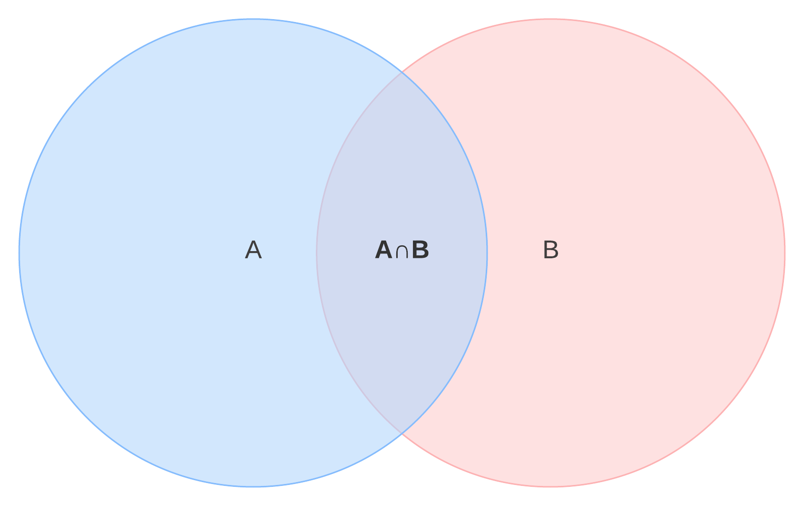

MATH 4740 - Theory of Probability
Jie Zhong
Department of Mathematics
California State University, Los Angeles
Chapter 1 - Introduction to Probability
1.4. Set Theory
1.5. The Definition of Probability
1.6. Finite Sample Spaces
1.7. Counting Methods
1.8. Combinatorial Methods
Example 1.8.1 (choosing subsets)
Consider the set \(\{a, b, c, d\}\).
How many distinct subsets of size two?
Note: \(\{a, b\} = \{b, a\}\), where the order does not matter!
All subsets of size two: \[ \{a, b\}, \{a, c\}, \{a, d\}, \{b, c\}, \{b, d\}, \{c, d\}, \] and the total is \(6\).
Combination
A selection of items from a set such that the order of the selection does not matter.
In fact, a combination is an unordered sampling without replacement.
Question: How many combinations of \(k\) items selected from a set of \(n\) distinct items are possible?
We call this number “\(n\) choose \(k\)”, denoted by \[ C_{n, k}, \quad\text{or}\quad C^n_k, \quad\text{or}\quad \binom{n}{k} \]
How to find this number \(C_{n,k}\)?
We will use a different way to compute \(P_{n,k}\).
Making an ordered selection of \(k\) items (\(k\text{-permutation}\)) is the same as choosing a combination of \(k\) items and then ordering them.
This is a \(2\text{-step}\) procedure:
So, \[ P_{n, k} = C_{n,k} \cdot k!. \]
Thus, \[ C_{n,k} = \frac{P_{n,k}}{k!} = \frac{n!}{(n-k)! k!}. \]
Example
Select \(5\) of \(30\) students in a class without regard to the order:
\[ C_{30, 5} = \frac{30!}{25!5!} \]
Binomial coefficient
\[ \binom{n}{k} = C_{n,k} = \frac{n!}{(n-k)! k!} \]
Theorem. For any real numbers \(x\) and \(y\), \(n\in \mathbb{N}\), \[ (x + y)^n = \sum_{k=0}^n \binom{n}{k} x^k y^{n-k}. \]
For the case \(n=2\):
\[ (x + y)^n = \sum_{k=0}^n \binom{n}{k} x^k y^{n-k}. \]
Idea of the proof
\[ (x + y)^n = (x + y)(x + y)\cdots (x + y). \]
After expansion, a typical term should look like
\[ \text{const}\times x^k y^j, \quad k + j = n; \quad \text{or}\quad \text{const}\times x^k y^{n-k}. \]
This “const” is the number of copies of each \(x^ky^{n-k}\), which is a combination number selecting \(k\) times of \(x\) out of total number \(n\).
Note:
(1) \(\binom{n}{0} = \binom{n}{n} = 1\).
(2) \(\binom{n}{k} = \binom{n}{n-k}\)
Proof of (2):
The second formula above suggests that choosing \(k\) items from a set of \(n\) distinct items is the same as choosing \((n-k)\) items.
In other words, a combination is in fact a partition of a set into two parts.
Example
Flip a fair coin \(10\) times.
(1) What’s the probability \(p\) of obtaining exactly three heads?
One typical (possible) outcome could be \(H T \dots T\), or \(10\dots 0\).
Thus, the sample space here is
\[ S = \{(i_1, \dots, i_{10}) \mid i_j = 0 ~\text{or}~ 1, j = 1, \dots, 10 \}. \]
Let \(A\) be the event that we obtain exactly three heads when flipping a coin \(10\) times, so
\[ p = \frac{\# A}{\# S} = \frac{\binom{10}{3}}{2^{10}}. \]
Flip a fair coin \(10\) times.
(2) What’s the probability \(p'\) of obtaining three or fewer heads?
Let \(A'\) be the event that we obtain three or fewer heads. Then
\[ \# A' = \binom{10}{0} + \binom{10}{1} + \binom{10}{2} + \binom{10}{3}, \] and so
\[ p' = \frac{\# A'}{\# S} = \frac{\binom{10}{0} + \binom{10}{1} + \binom{10}{2} + \binom{10}{3}}{2^{10}}. \]
Sampling with replacement but unordered
Recall: sampling with replacement but ordered \[ n^k. \]
Example 1.8.4 (Blood types)
The gene for human blood types consists of a pair of alleles chosen from three alleles, called \(A, B\) and \(O\).
\(OA\) is the same as \(AO\): order does not matter.
\(AA, BB, OO\) are valid types: with replacement.
Question: How many genotypes are there for the blood type?
We can simply list all cases: \(AA, BB, OO, AB, BO, AO\), and there are \(6\) in total.
Warning: \(6\) here is not \(C_{3,2} = 3\), nor \(3^2 = 9\).
What if a gene consists of a pair chosen from a set of \(n\) different alleles? How many genotypes?
Case 1: there \(n\) pairs where both alleles are the same.
Case 2: there are \(\binom{n}{2}\) pairs where two alleles are different.
Then the total is
In general, the number of unordered sampling of size \(k\) items with replacement for \(n\) items is \[ \binom{n+k-1}{k}, \qquad \text{see Exercise 19}. \]
When \(k=2\),
\[ \frac{n^{2} + n}{2} = \frac{n(n+1)}{2} = \binom{n+1}{2}. \]
Summary
- Sampling with replacement, order matters.
Example: flip a fair coin \(10\) times, then \(\# S = 2^{10} (n^k)\). - Sampling without replacement, order matters.
Example: pick \(5\) students out of 30 to form a line: \(P_{30, 5}, \quad(P_{n,k})\). - Sampling without replacement, order does not matter.
Example: pick \(5\) students out of \(30\) to form a team/committee: \(C_{30, 5} = \binom{30}{5}\). - Sampling with replacement, order does not matter (tricky). Example 1.8.4, Exercise 19.
Example
Suppose we have a class of \(24\) children. We consider three different scenarios that each involves choosing \(3\) children.
Every day a random child is chosen to lead the class to lunch, without regard to previous choices.
(1) What is the probability that Carlos was chosen on Monday and Wednesday, Aaron on Tuesday?
Let \(A\) denote the event that Carlos was chosen on Monday and Wednesday, Aaron on Tuesday.
There are two ways to count in this problem:
\[ \# S = 24^3,~ \# A = 1\qquad \text{or}\qquad \# S = 24^5, ~ \# A = 24^2, \] but both give you
\[ \mathbb{P}(A) = \frac{1}{24^{3}}. \]
(2) Three children are chosen randomly to be the class president, vice president and treasurer. No student can hold more than one position. What’s the probability that Mary is president, Cory is vice president and Matt is treasurer?
Let \(A'\) be the event that Mary is president, Cory is vice president and Matt is treasurer. Then
\[ \# S = P_{24, 3}, \quad \# A' = 1, \] and
\[ \mathbb{P}(A') = \frac{1}{P_{24,3}}. \]
(3) A team of three children is chosen at random. What’s the probability that Mary is on the team?
Let \(A''\) be the event that Mary is on the team. Then
\[ \# S = \binom{24}{3}, \quad \# A'' = \binom{1}{1} \binom{23}{2}, \]
and \[ \mathbb{P}(A') = \frac{\binom{1}{1} \binom{23}{2}}{\binom{24}{3}}. \]
1.9. Multinomial Coefficients
Recall: Binomial coefficient \[\binom{n}{k} = C_{n, k} = \binom{n}{n-k}\]
Partitions
A combination is a choice of \(k\) items of an \(n\text{-item}\) set, and the order does not matter.
This is the same as partitioning the set into two parts. One part contains \(k\) items, and the other contains the remaining \(n-k\) items.
Now consider partitions into more than two parts.
Example
Suppose that \(20\) members of an organization are to be divided into three committees \(A, B\) and \(C\), in such a way \(A\) and \(B\) each has \(8\) members, \(C\) has \(4\) members. Each member can be assigned to only one committee.
Question: How many ways to assign the members?
\(3\text{-step}\) procedure: in each step we choose the members to one committee.
Partitions - General Case
Given a set of \(n\) distinct items and non-negative integers \(n_{1}, n_{2}, \dots, n_{r}\) with \(n_1 + n_2 + \cdots +n _r = n\).
Question: How many ways can the set be partitioned into \(r\) disjoint subsets with \(n_i\) items in its \(i^{\text{th}}\) subset?
We call this number \[ \binom{n}{n_1, n_{2}, \dots, n_{r}} \]
This is a \(r\text{-step}\) procedure:
Check for \(r=2\): \(n_1 = k, n_2 = n-k\), \[ \binom{n}{k} = \binom{n}{n-k} = \binom{n}{k, n-k} = \frac{n!}{k!(n-k)!} \]
Example
How many arrangements are there of the letters “BANANA”?
Solution (1):
There are \(6\) positions for the \(3\) letters.
Each arrangement is a partition of the set of \(6\) positions into a subset of size \(3\) (the positions that get the letter \(A\)), and subset of size \(2\) (the positions that get the letter \(N\)), and a subset of size \(1\) (the position that gets the letter \(B\)).
For example,
\[ A A A B N N \leftrightarrow \{1, 2, 3\}, \{4\}, \{5, 6\} \]
\[ B A N A N A \leftrightarrow \{2, 4, 6\}, \{1\}, \{3, 5\} \]
Total number of arrangements:
\[ \binom{6}{3,2,1} = \frac{6!}{3!2!1!} = 60. \]
Solution (2):
We first pretend the \(6\) letters are distinct:
\[ B, A_1, A_2, A_3, N_1, N_2. \]
There are \(6!\) ways to arrange them.
But each of \(3!\) ways to arrange \(A\)’s and each of the 2! ways to arrange \(N\)’s correspond to the same arrangement.
For example, \[ B A_1 N_1 A_2 N_2 A_3 \quad\text{and}\quad B A_2 N_1 A_3 N_2 A_{1} \] both spell as \(BANANA\).
So we need to divide it by \(3!2!\), and the total number ways is \[ \frac{6!}{3!2!} = 60 = \binom{6}{3, 2, 1}. \]
Example 1.9.4
A deck of \(52\) cards, containing \(13\) hearts. Suppose cards are shuffled and distributed among \(A, B, C\) and \(D\) four players.
What is the probability that \(A\) gets \(6\) hearts, \(B\) gets \(4\) hearts, \(C\) gets \(2\) hearts, and \(D\) gets \(1\) heart?
Solution (1):
\[ \# S = \binom{52}{13, 13, 13, 13} = \frac{52!}{(13!)^4}. \]
Let \(E\) be the event that \(A\) gets \(6\) hearts, \(B\) gets \(4\) hearts, \(C\) gets \(2\) hearts, and \(D\) gets \(1\) heart, then
\[ \# E = \binom{13}{6, 4, 2, 1} \cdot \binom{39}{7, 9, 11, 12}. \]
Thus, \[ \mathbb{P}(E) = \frac{\# E}{\# S} = \frac{13!}{6!4!2!} \cdot \frac{39!}{7!9!11!12!} \cdot \frac{(13!)^{4}}{52!}. \]
Solution (2):
Consider \(52\) cards are distributed one by one.
So there are \(\# S = \binom{52}{13}\) total number of combinations of positions of \(13\) hearts, and
\[ \# E = \binom{13}{6} \binom{13}{4} \binom{13}{2} \binom{13}{1}. \]
Of course, the probability \(\mathbb{P}(E)\) is the same as before.
1.10. The Probability of a Union of Events
Recall: Inclusion-Exclusion formula
\[ \mathbb{P}(A\cup B) = \mathbb{P}(A) + \mathbb{P}(B) - \mathbb{P}(A \cap B). \]

Theorem
(1) Three events:

(2) General case:
Example 1.10.1 (easy, read by yourself)
Matching Problem
Suppose \(3\) men throw their hats into the center of a room. The hats are mixed up, and then each man randomly selects a hat.
What’s the probability that at least one man selects his own hat?
Want: \(\mathbb{P}(A)\), where \(A\) is the event that at least one man selects his own hat.
What is the sample space \(S\)?
Consider each outcome is a vector of \(3\) members.
For example,
\((1, 2, 3)\) means each man selects his own hat;
\((2, 1, 3)\) means 1st man selects the hat \(2\), 2nd man selects the hat \(1\), and 3rd man selects his own.
Therefore,
\(\# S = 3! = 6\).
What is the event \(A\)?
Denote by \(E_i\) the event that \(i^{\text{th}}\) man selects his own hat, then
\[ A = E_1\cup E_2\cup E_3. \]
To compute \(\mathbb{P}(A)\), we need \(\mathbb{P}(E_{i}), \mathbb{P}(E_{i}\cap E_j)\) and \(\mathbb{P}(E_1\cap E_2\cap E_3)\):
Therefore, \[ \mathbb{P}(A) = \frac{1}{3} \cdot 3 - 3 \cdot \frac{1}{6} + \frac{1}{6} = 1 - \frac{1}{2} + \frac{1}{6} = \frac{2}{3}. \]
Note: see the “hat problem” on page 49 for the general case.
Chapter 2 - Conditional Probability
2.1. The Definition of Conditional Probability
Given an experiment with probability model \((S, \mathbb{P}, \mathcal{F})\).
Suppose we know the outcome belongs to a given event \(B\), such that \(\mathbb{P}(B)>0\).
The probability that the outcome also belongs to the event \(A\) is called the conditional probability of \(A\) given \(B\), and is defined by \[ \mathbb{P}(A|B) = \frac{\mathbb{P}(A\cap B)}{\mathbb{P}(B)}. \]
Intuitively, out of the total probability assigned to elements of \(B\), \(\mathbb{P}(A|B)\) is the fraction assigned to elements that also belongs to \(A\):

Example
A fair six-sided die is rolled twice.
You were told that the sum of two rolls is \(9\). How likely is it that the first roll is \(6\)?
Let \(A\) be the event that the first roll is \(6\), and \(B\) be the event that the sum of two is \(9\).
\[ \mathbb{P}(A) = \frac{6}{36} = \frac{1}{6}. \]
What about \(\mathbb{P}(A|B)\)?
By definition,
\[ B = \{(3, 6), (6, 3), (4, 5), (5, 4)\}, \quad\text{so,}~\# B = 4. \]
\[ A\cap B = \{(6, 3)\}, \quad\text{so,}~\# A = 1. \]
Therefore, \[ \mathbb{P}(A|B) = \frac{1}{4}. \]
Theorem
If we have a simple sample space, then \[ \mathbb{P}(A|B) = \frac{\# (A\cap B)}{\# B}. \]
Example
Toss a fair coin \(5\) times.
What is the probability that there are more heads than tails given that the first toss is heads?
Let \(A\) be the event that there are more heads than tails, and \(B\) be the event that the first toss is heads.
\[ \# B = 1\cdot 2\cdot 2\cdot 2 \cdot 2 = 2^4, \]
and \[ \# (A\cap B) = \binom{4}{2} + \binom{4}{3} + \binom{4}{4} = 11. \]
So \[ \mathbb{P}(A|B) = \frac{\# (A\cap B)}{\# B} = \frac{11}{2^{4}} = \frac{11}{16}. \]
Important Fact
A conditional probability is a probability measure.
Specifically, given a probability model \((S, \mathbb{P}, \mathcal{F})\), an event \(B\) with \(\mathbb{P}(B)>0\), then the set function \(\mathbb{P}(\cdot | B)\) satisfies the probability axioms and consequences, i.e.,
(1) \(\mathbb{P}(A|B) \ge 0\), for all event \(A\).
(2) \(\mathbb{P}(S | B) = 1\).
(3) If \(A_1, A_2, \dots\) is any countable sequence of disjoint events. \[ \mathbb{P}(\cup_i A_i | B) = \sum_i \mathbb{P}(A_i| B). \]
Example
Exercise. 11. \[ \mathbb{P}(A^c|B) = 1 - \mathbb{P}(A|B). \]
Exercise. 12. \[ \mathbb{P}(A\cup B|C) = \mathbb{P}(A|C) + \mathbb{P}(B | C) - \mathbb{P}(A\cap B| C). \]
Multiplication rule for conditional probability
Recall: \[ \mathbb{P}(A|B) = \frac{\mathbb{P}(A\cap B)}{\mathbb{P}(B)}, \quad \mathbb{P}(B|A) = \frac{\mathbb{P}(A\cap B)}{\mathbb{P}(B)}. \]
By reordering the terms, we have
More general version of this rule:
Example
Draw \(3\) cards from a deck of \(52\) cards without replacement. What’s the probability that you draw \(A22\) in that order?
Let \(B\) be the event of interest, and define
So, \(B = A_1 \cap A_2 \cap A_3\), and thus,
Example (Radar detection)
An aircraft is present in a certain area with probability \(0.05\). If an aircraft is present, the radar correctly detects it with probability \(0.99\). If an aircraft is not present, the radar incorrectly registers it with probability \(0.1\).
(1) What’s the probability of a false alarm (no aircraft but radar sees one)?
Let \(A\) be the event that an aircraft is present, and \(B\) be the event that radar sees one.
(2) What’s the probability of a missed detection (that there is an aircraft and radar does not see it)?
Law of total probability
Let \(B_1, B_2, \dots\) be a countable sequence of events that form a partition of the sample space \(S\):
(1) \(B_1, B_2, \dots\) are disjoint, and
(2) \(\cup_{i=1}^{\infty} B_i = S\).
Then for any event \(A\), we have that \(A\cap B_1, A\cap B_2, \dots\) are also disjoint, and
\[ A = \cup_i (A \cap B_i), \]
\[ \mathbb{P}(A) = \sum_i \mathbb{P}(A\cap B_i) = \sum_i \mathbb{P}(A|B_i) \mathbb{P}(B_i). \]

Special case: \(S = B \cup B^c\).
\[ A = (A \cap B)\cup (A \cap B^c), \]
and
Example
There are \(3\) urns. Urn \(1\) has \(3\) red, \(4\) green, and \(5\) blue balls; urn \(2\) has \(3\) red, \(10\) green, and \(1\) blue balls; urn \(3\) has \(3\) red, \(2\) green, and \(2\) blue balls.
Choose one of the urns at random and draw a ball from this urn. What’s the probability that the ball we choose is green?
Let \(A\) be the event of interest.
Partition \(S\) into \(3\) events: \[ B_i = ~\text{the ball chosen is from the $i\text{-th}$ urn}, i = 1, 2, 3. \]
Then we have
\[ S = B_{1} \cup B_2 \cup B_3, \quad B_i\cap B_j = \emptyset, i \neq j, \]
and thus
2.2. Independent Events
Definition
We say two events \(A\) and \(B\) are independent if
\[ \mathbb{P}(A\cap B) = \mathbb{P}(A) \mathbb{P}(B). \]
Note:
(1) \(A\) and \(B\) are disjoint if \[ \mathbb{P}(A\cup B) = \mathbb{P}(A) + \mathbb{P}(B). \]
(2) Suppose \(\mathbb{P}(B)>0\), events \(A\) and \(B\) are independent if \[ \mathbb{P}(A|B) = \mathbb{P}(A). \qquad\text{Why?} \]
Intuition: \(A\) and \(B\) are independent if the occurrence of \(B\) does not affect the occurrence of \(A\).
Example
Flip two fair coins.
Let \(A\) be the event that the first coin is heads, and \(B\) be the event that the second is tails.
By intuition, it seems \(A\) and \(B\) are independent.
Check: if \(\mathbb{P}(A\cap B) = \mathbb{P}(A) \mathbb{P}(B)\) ?
\[ \mathbb{P}(A\cap B) = \frac{1}{4}, \quad \mathbb{P}(A) = \mathbb{P}(B) = \frac{1}{2}. \]
Example
Roll a six-sided die.
\[ \mathbb{P}(\{6\}) = \frac{1}{6}. \]
If you know the outcome is even, would you change the answer to the probability of getting \(6\)?
Let \(A\) be the event of obtaining \(6\), and \(B\) be the event that you get an even number. Then
\[ \mathbb{P}(A|B) = \frac{1}{3} \neq \frac{1}{6} = \mathbb{P}(A). \] So \(A\) and \(B\) are not independent.
Equivalent definitions
The following statements are equivalent:
- \(A\) and \(B\) are independent.
- \(\mathbb{P}(A\cap B) = \mathbb{P}(A) \mathbb{P}(B)\).
- \(\mathbb{P}(A|B) = \mathbb{P}(A)\).
- \(\mathbb{P}(B|A) = \mathbb{P}(B)\).
- \(\mathbb{P}(A|B^c) = \mathbb{P}(A)\).
- \(\mathbb{P}(B|A^c) = \mathbb{P}(B)\).
Definition (for three events)
The events \(A_1, A_2, A_3\) are independent if all of the following conditions hold:
- \(\mathbb{P}(A_1\cap A_2\cap A_3) = \mathbb{P}(A_1)\mathbb{P}(A_2)\mathbb{P}(A_3)\).
- \(\mathbb{P}(A_1\cap A_2) = \mathbb{P}(A_1)\mathbb{P}(A_2)\).
- \(\mathbb{P}(A_1\cap A_3) = \mathbb{P}(A_1)\mathbb{P}(A_3)\).
- \(\mathbb{P}(A_2\cap A_3) = \mathbb{P}(A_2)\mathbb{P}(A_3)\).
Example
Flip a fair coin twice.
\[ S = \{HH, TT, TH, HT\}. \]
Let
Then
\[ \mathbb{P}(A) = \mathbb{P}(B) = \mathbb{P}(C) = \frac{2}{4} = \frac{1}{2}. \]
Are \(A\) and \(B\) independent?
\[ \mathbb{P}(A\cap B) = \frac{1}{4} = \frac{1}{2}\cdot \frac{1}{2} = \mathbb{P}(A)\mathbb{P}(B). \]
However,
\[ \mathbb{P}(A\cap B \cap C) = \mathbb{P}(\{HH\}) = \frac{1}{4}, \] and
\[ \mathbb{P}(A) \mathbb{P}(B) \mathbb{P}(C) = \frac{1}{2}\cdot \frac{1}{2}\cdot\frac{1}{2} = \frac{1}{8}. \]
Therefore, \(A, B\) and \(C\) are not independent.
Read: Example 2.2.5.
Definition (for \(n\) events)
The events \(A_1, A_2, \dots, A_n\) are independent if
\[ \mathbb{P}(\cap_{i\in I} A_i) = \prod_{i\in I} \mathbb{P}(A_i) \] for any index subset \(I\subseteq \{1, 2, \dots, n\}\).
Another equivalent definition
The events \(A_1, A_2, \dots, A_n\) are independent if
\[ \mathbb{P}(\cap_{i\in I} A_i^{\ast}) = \prod_{i\in I} \mathbb{P}(A_i^{\ast}) \] for any subset \(I\subseteq \{1, 2, \dots, n\}\), where \[ A^{\ast}_i = A_i ~\text{or}~ A^c_i. \]
In particular, if \(A\) and \(B\) are independent, then
Example 2.2.5 (Inspecting items)
A machine produces a defective item with probability \(p\), and a non-defective item with probability \(1-p\).
\(6\) items are produced, and randomly selected, inspected. What’s the probability that there are exactly \(2\) items are defective?
Label the items by \(1, 2, 3, 4, 5, 6\), and define
\[ D_j = \{ j\text{-th item is defective} \}. \]
Then \(D_1, D_2, \dots, D_6\) are independent.
A typical desired outcome:
\[ E = D^c_1 \cap D_2 \cap D_3^c \cap D_4^c \cap D_5 \cap D^c_6. \]
Key observation: all desired outcomes have the same probability \(p^2 (1-p)^4\).
Thus, we only need to count the number of such outcomes, which is
\[ \binom{6}{2}. \]
Therefore, \[ \mathbb{P}(\{\text{exactly $2$ defective items}\}) = \binom{6}{2} p^2 (1-p)^4. \]
2.3. Bayes’ Theorem
\[ \text{"conditional probability"} ~+~ \text{"law of total probability"} \]
Version 1
\[ \mathbb{P}(A|B) = \frac{\mathbb{P}(A\cap B)}{\mathbb{P}(B)} = \frac{\mathbb{P}(B|A)\mathbb{P}(A)}{\mathbb{P}(B)}. \]
Bayes’ formula allows you to reverse the order of conditioning.
Version 2
\[ \mathbb{P}(A|B) = \frac{\mathbb{P}(B|A)\mathbb{P}(A)}{\mathbb{P}(B|A)\mathbb{P}(A) + \mathbb{P}(B|A^c)\mathbb{P}(A^c)}. \]
Version 3
Let \(A_1, A_2,\dots\), be a countable partition of \(S\), then
\[ \mathbb{P}(A_k|B) = \frac{\mathbb{P}(B|A_k)\mathbb{P}(A_k)}{\sum_i \mathbb{P}(B|A_i)\mathbb{P}(A_i)} \]
Example (Medical test)
Suppose \(0.1\%\) of the population carries a certain disease. For people with disease, there is a test that correctly gives a positive result \(99.8\%\) of the time. For people without disease, the test correctly gives a negative result \(99.7\%\) of the time.
If one’s test is positive, what is the probability that the person has the disease?
Define
Have:
\[ \mathbb{P}(A), \quad \mathbb{P}(B|A), \quad \mathbb{P}(B^c|A^c). \]
Have: \[ \mathbb{P}(A), \quad \mathbb{P}(B|A), \quad \mathbb{P}(B^c|A^c). \]
Want:
\(\mathbb{P}(A\cap B)\)?
No, but \[ \mathbb{P}(A|B) = \frac{\mathbb{P}(B|A)\mathbb{P}(A)}{\mathbb{P}(B|A)\mathbb{P}(A) + \mathbb{P}(B|A^c)\mathbb{P}(A^c)}. \]
How to compute \(\mathbb{P}(B|A^c)\) ?
\[ \mathbb{P}(B|A^c) = 1 - \mathbb{P}(B^c|A^c) = 0.003 \]
Thus,
\[ \mathbb{P}(A|B) = \frac{0.998\cdot 0.001}{0.998 \cdot 0.001 + 0.003 \cdot 0.999} \approx 24.98\%. \]
Terminology
- \(\mathbb{P}(B|A) = 0.998\): true positive rate
- \(\mathbb{P}(B^c|A) = 0.002\): false negative rate
- \(\mathbb{P}(B^c|A^c) = 0.997\): true negative rate
- \(\mathbb{P}(B|A^c) = 0.003\): false positive rate
In this example, \(\mathbb{P}(A)\) is often called the prior probability, and \(\mathbb{P}(A|B)\) is called the posterior probability.
Example
A grocery store gets eggs from \(3\) different farms.
- \(20\%\) of eggs come from farm \(1\)
- \(30\%\) of eggs come from farm \(2\)
- \(50\%\) of eggs come from farm \(3\)
- \(5\%\) of egg cartons from farm \(1\) contain a cracked egg
- \(3\%\) of egg cartons from farm \(2\) contain a cracked egg
- \(2\%\) of egg cartons from farm \(3\) contain a cracked egg
If you open a carton, and find a cracked egg, what is the probability that the carton came from farm \(3\)?
Define
Want:
\[ \mathbb{P}(A_3|B) = \frac{\mathbb{P}(B|A_3)\mathbb{P}(A_3)}{\mathbb{P}(B)}. \]
Since
\[ \mathbb{P}(A_3|B) = \frac{10}{29}. \]
Chapter 3 - Random Variables and Distributions
3.1. Random Variables and Discrete Distributions
Definition
Given an probability model \((S, \mathbb{P}, \mathcal{F})\), a random variable is a function \(X\) mapping from \(S\) to a set of real numbers:
\[ X : S \mapsto \mathbb{R}. \]
To each possible outcome \(\omega\in S\), \(X\) assigns a real number \(X(\omega)\), which is called an experimental value or a realization of \(X\).
Example
Roll two fair six-sided dice.
Define
Sample space
\[ S = \{ (i, j) \mid 1\le i, j\le 6, i, j \in \mathbb{N} \}, \] and \(\# S = 36\).
Are these functions (mappings) random variables?
Questions: How can we use such notations to express events?
Let’s compute the probability that the outcome from the first die is \(3\).
So,
\[ \mathbb{P}(\{X_1 = 3\}) = \mathbb{P}(X_1 = 3) = \frac{6}{36} = \frac{1}{6}. \]
We can compute other probabilities, like
\[ \mathbb{P}(X_1 = 3, X_2 = 5) = \mathbb{P}(\{X_1 = 3\} \cap \{X_2 = 5\}) = \frac{1}{36}, \]
and
\[ \mathbb{P}(X = 3) = \mathbb{P}(\{(1, 2), (2, 1)\}) = \frac{2}{36}. \]
Notations
- \(\{X = c\} = \{\omega \in S \mid X(\omega) = c\}\).
- \(\{ a \le X \le b \} = \{ \omega \in S \mid a \le X(\omega) \le b\}\).
- \(\{X\in B\} = \{ \omega \in S \mid X(\omega) \in B \}\), \(B\) is a subset of \(\mathbb{R}\).
- \(\{X = a, Y = b\} = \{X = a\} \cap \{ Y = b\}\).
Definition (Probability distribution)
The probability distribution of a random variable \(X\) is a collection of all probabilities of the form \(\mathbb{P}(X\in B)\), for all subset \(B\subseteq \mathbb{R}\), such that \(\{X\in B\} \in \mathcal{F}\).
Two types of random variables
If the range of the random variable \(X\) is at most countable (finite or infinitely countable), we call \(X\) a discrete random variable. Otherwise, we call \(X\) is a continuous random variable.
Definition
Let \(X\) be a discrete random variable. The probability mass function (p.m.f.) \(p_X\) is defined by
\[ p_X(k) = \mathbb{P}(X = k), ~\text{for every real number } k. \]
Theorem
The probability distribution of a discrete random variable is completely determined by its p.m.f.
Proof
For every \(B\subseteq \mathbb{R}\), we have
\[ \{ X \in B\} = \{ X\in B \cap ~\text{Range}(X)\}. \]
Since \(X\) is discrete, \(\text{Range}(X)\) is at most countable, \(B\cap~\text{Range}(X)\) is also at most countable, say \[ B\cap~\text{Range}(X) = \{k_1, \dots, k_n\} ~\text{or}~ \{k_1, \dots, k_n, \dots \}. \]
Therefore,
Example
Roll two fair dice. Let
What are the p.m.f.s of \(X_1\) and \(X\)?
For \(X_1\),
\(\text{Range}(X_1) = \{1, 2, 3, 4, 5, 6\}\), and so \(X_1\) is a discrete random variable.
Obviously, if \(k\notin \text{Range}(X_1)\), \[ p_{X_1} (k) = 0. \]
For example,
\[ p_{X_1}(1.5) = \mathbb{P}(X_1 = 1.5) = 0. \]
So we only need to consider the case that \(k\in \text{Range}(X_1)\):
\[ p_{X_1}(k) = \mathbb{P}(X_1 = k) = \frac{1}{6}. \]
To sum up,
\[ p_{X_1}(k) =\begin{cases} \frac{1}{6}, & k\in \{1, 2, 3, 4, 5, 6\},\\ 0, & k\notin \{1, 2, 3, 4, 5, 6\}. \end{cases} \]
Another way of presenting the probability mass function:
| \(k\) | \(1\) | \(2\) | \(3\) | \(4\) | \(5\) | \(6\) |
|---|---|---|---|---|---|---|
| \(p_{X_1}(k)\) | \(1/6\) | \(1/6\) | \(1/6\) | \(1/6\) | \(1/6\) | \(1/6\) |
What about \(X\)?
| \(k\) | \(2\) | \(3\) | \(4\) | \(5\) | \(6\) | \(7\) | \(8\) | \(9\) | \(10\) | \(11\) | \(12\) |
|---|---|---|---|---|---|---|---|---|---|---|---|
| \(p_{X}(k)\) |
Theorem
(1) \(p_X(k) = 0\) if \(k\notin \text{Range}(X)\).
(2) \(\sum_{k\in \text{Range}(X)} p_X(k) = 1\).
Uniform Distribution on Integers
Let \(m< n\) be two integers. Suppose that the value of a random variable \(X\) is equally likely to be each of the integer \(m, m+1, \dots, n\).
Then we say that \(X\) has the uniform distribution on the integers \(m, m+1, \dots, n\).
Also, the p.m.f. of \(X\)
\[ p_X(k) = \begin{cases} \frac{1}{n-m+1}, &\text{for}~k = m, m+1, \dots, n,\\ 0, &\text{otherwise}. \end{cases} \]
The random variable \(X_1\) in the previous example has the uniform distribution on the integers \(1, 2, \dots, 6\).
Note: Random Variables Can Have the Same Distribution without Being the Same Random Variable.
Bernoulli Distributions.
Flip a coin. Suppose the probability that you get heads is \(p\) (not necessarily to be \(1/2\)), \(p\in [0, 1]\).
Define \(X\) to be the outcome of the experiment:
\[ X(H) = 1, X(T) = 0, \]
and
\[ \text{Range}(X) = \{0, 1\}. \]
So the p.m.f. of \(X\):
| \(k\) | 1 | 0 |
|---|---|---|
| \(p_X(k)\) | \(p\) | \(1-p\) |
Definition
Let \(0\le p\le 1\). A random variable \(X\) has the Bernoulli distribution with the “success” probability \(p\) if \(X\) is \(\{0, 1\}\text{-valued}\) and satisfies \(\mathbb{P}(X=1) = p\) and \(\mathbb{P}(X=0) = 1-p\).
We write \(X\sim \text{Ber}(p)\).
Binomial Distribution
Flip a (possibly biased) coin \(n\) times.
\[ S = \{(i_1, i_2, \dots, i_n\}\mid i_1, i_2, \dots, i_n\in \{0, 1\}\} \]
Let
\[ X_i = i\text{-th outcome}, i = 1, 2, \dots, n. \]
Then
\[ X_i \sim \text{Ber}(p), \]
where
\[ p = \mathbb{P}(\{H\}) = \mathbb{P}(X_i = 1). \]
Now we define
\[ X = X_1 + X_2 + \dots + X_n. \]
So what does \(X\) mean here?
For example,
\[ X((1, 0, \dots, 0)) = 1, X((1, 0, 1, 0, \dots, 0)) = 2. \]
What is the p.m.f. of \(X\)?
First of all, \[ \text{Range}(X) = \{0, 1, \dots, n\}, \] and \[ p_X(k) = 0 \quad \text{if}~ k \notin \text{Range}(X). \]
If \(k\in \text{Range}(X)\),
\[ \{X = k\} = \{\text{we have exactly $k$ times of successes (heads) out of $n$ flips}\} \]
Therefore,
\[ \mathbb{P}(X = k) = \binom{n}{k} p^k (1 - p)^{n-k}. \]
Definition
Let \(0\le p\le 1\). A random variable is \(X\) has the binomial distribution with parameter \(n\) and \(p\) if \[ \mathbb{P}(X = k) = \binom{n}{k} p^k (1 - p)^{n-k}, \] for \(k\in \{0, 1, \dots, n\}\).
We write \(X\sim \text{Bin}(n, p)\).
Note:
\[ \sum_{k=0}^n \binom{n}{k}p^k (1-p)^{n-k} = ( p + (1-p) )^n = 1^n = 1. \]
In particular, if \(p=1/2\), we have
\[ \sum_{k=0}^n \binom{n}{k} = 2^{n}. \]
Example
What is the probability that five rolls of a fair die yield two or three sixes?
Let \(S_5\) be the number of sixes that appear in the five rolls.
Want:
\[ \mathbb{P}(S_5 = 2 ~\text{or}~ S_5 = 3) = \mathbb{P}(S_5 = 2) + \mathbb{P}(S_5 =3). \]
Key: \(S_5 \sim \text{Bin}(5, 1/6)\).
Thus,
3.2. Continuous Distributions
For a continuous random variable, we introduce its probability density function (p.d.f.).
Definition
For a continuous random variable \(X\), if there exists a function \(f_X\), such that
\[ \mathbb{P}(X\in B) = \int_B f_X(x)\, dx, \quad B\subseteq \mathbb{R}, \]
then we call this function \(f_X\) the probability density function of \(X\).
In particular, \(B = [a, b]\),
\[ \mathbb{P}(a\le X \le b) = \int_a^b f_X(x)\, dx. \]
Note:
(1) \(f_{X}(x) \ge 0\).
(2) \(\int_{-\infty}^{\infty} f_X(x)\, dx = \mathbb{P}(-\infty < X < \infty) = 1\).
Example (Uniform Distribution on Intervals)
Choose a real number uniformly at random from the interval \([0, 1]\), so the sample space \(S = [0, 1]\). Assume that \([a, b]\subseteq S\), the probability that the chosen number lies in the interval \([a, b]\) should be equal to the proportion of \(S\) covered by \([a, b]\),
\[ \mathbb{P}([a, b]) = \frac{b-a}{1-0} = b-a. \]
We call the probability model in this example, the uniform distribution on \([0, 1]\), and we write \(X\sim \text{Unif}([0, 1])\).
Example
Let \(X\sim\text{Unif}([0, 1])\).
\[ \mathbb{P}(0.5 \le X\le 0.8) = 0.8 - 0.5 = 0.3. \]
Example
What if we change the sample space \(S\) to \([-1, 1]\)?
Consider \([a, b]\subseteq [-1, 1]\),
\[ \mathbb{P}([a, b]) = \frac{b-a}{1 - (-1)} = \frac{b-a}{2}. \]
In general, we say a random variable \(X\) has a uniform distribution on \([c, d], (d>c)\), if
\[ \mathbb{P}([a, b]) = \frac{b-a}{d-c}, \quad\text{for}~ [a, b]\subseteq [c, d]. \]
Note that \(\text{Range}(X) = [c, d]\), so what is the p.d.f. of \(X\)?
\[ f_X(x) = \begin{cases} \frac{1}{d-c}, &\text{if}~ c\le x\le d;\\ 0, &\text{otherwise}. \end{cases} \]
For example, \([a, b] \subseteq [c, d]\),
\[ \mathbb{P}(a\le X \le b) = \int_a^b f_X(x)\, dx = \int_a^b \frac{1}{d-c} \, dx = \frac{b-a}{d-c}. \]
Other continuous distributions.
Incompletely specified p.d.f.
Suppose \(X\) has the p.d.f. defined by
\[ f_X(x) = \begin{cases} c x, &\text{if}~ 0 < x < 4,\\ 0, &\text{otherwise}. \end{cases} \]
(1) Find \(c\)?
Fact:
\[ \int_{-\infty}^{\infty} f_X(x) \, dx = 1. \]
But,
\[ \int_{-\infty}^{\infty} f_X(x) \, dx = \int_{-\infty}^{0} f_X(x) \, dx + \int_{0}^{4} f_X(x) \, dx + \int_{4}^{\infty} f_X(x) \, dx = \int_{0}^{4} f_X(x) \, dx, \]
and
\[ \int_{0}^{4} f_X(x) \, dx = \int_{0}^{4} c x \, dx = 8c. \]
Therefore,
\[ c = \frac{1}{8}. \]
(2) Compute \(\mathbb{P}(1\le X\le 2)\).
(3) Compute \(\mathbb{P}(-5\le X\le 3)\).
(4) Compute \(\mathbb{P}(-5 \le X\le 5)\).
3.3. The Cumulative Distribution Functions
Example
Suppose the p.d.f of \(X\) is defined by
\[ f_X(x) =\begin{cases} \dfrac{1}{(1+x)^2}, & x>0,\\ 0, & x\le 0. \end{cases} \]
Compute
\[ \mathbb{P}(X \le t),\quad \text{for all}~ t \in \mathbb{R}. \]
If \(t = 3\),
\[ \mathbb{P}(X \le 3) = \frac{3}{1+3} = \frac{3}{4}. \]
If \(t= 2\),
\[ \mathbb{P}(X \le 2) = \frac{2}{3}. \]
Also, we can compute
\[ \mathbb{P}(X > 2) = 1 - \mathbb{P}(X \le 2) = 1 - \frac{2}{3} = \frac{1}{3}, \] and
What if \(t = -1\)?
\[ \mathbb{P}(X \le -1) = \frac{-1}{1 + (-1)} = \frac{-1}{0}? \]
Where went wrong?
Warning:
\[ \mathbb{P}(X \le t) = \frac{t}{1+t}, \quad \text{only when} ~t \ge 0! \]
If \(t<0\), we have
\[ \mathbb{P}(X \le t) = 0. \]
To sum up,
\[ \mathbb{P}(X \le t) = \begin{cases} \frac{t}{1+t}, & t\ge 0,\\ 0, & t<0. \end{cases} \]
Definition
Let \(X\) be a random variable. The cumulative distribution function (CDF) of \(X\) is defined by
\[ F_X(t) = \mathbb{P}(X \le t), \quad t\in \mathbb{R}. \]
Note: CDF can be defined for both discrete and continuous random variables.
Example
What is the CDF of a Bernoulli random variable?
Suppose \(X\sim \text{Ber}(p)\), i.e., \(p_X(1) = p, p_X(0)=1-p\).
Want: \(F_{X}(t) = \mathbb{P}(X \le t)\) for all \(t \in \mathbb{R}\).
Let’s just try out some values of \(t\).
\[ F_X(0) = \mathbb{P}(X \le 0) = p_X(0) = \mathbb{P}(X =0) = 1 - p. \]
\[ F_X(0.5) = \mathbb{P}(X \le 0.5) = p_X(0) = 1 - p. \]
\[ F_X(-1) = \mathbb{P}( X \le -1 ) = 0. \]
\[ F_X(5) = \mathbb{P}(X \le 5) = p_X(0) + p_X(1) = 1 - p + p = 1. \]
To sum up,
\[ F_X(t) = \begin{cases} 1, & t \ge 1,\\ 1 - p , & 0 \le t < 1, \\ 0, & t < 0. \end{cases} \]
The following is the plot of the CDF of Ber\((p)\).

Properties of CDF
(1) \(F\) is non-decreasing: if \(s < t\), \(F(s) \le F(t)\).
(2) \(\lim_{t \to -\infty} F(t) = \lim_{t \to -\infty} \mathbb{P}(X \le t) = 0\).
(3) \(0 \le F(t) \le 1\).
(4) \(F\) is right-continuous.
If \(X\) is discrete with p.m.f. \(p_X\), then
\[ F_X(t) = \mathbb{P}(X \le t) = \sum_{k \le t} p_X(k). \]
The graph of \(F\) is a non-decreasing right-continuous staircase.
If \(X\) is continuous with p.d.f. \(f_X(x)\), then
\[ F_X(t) = \mathbb{P}(X \le t) = \int_{-\infty}^t f_X(x) \, dx. \]
\[ F'_X(t) = f_X(t). \]
The graph of \(F_X\) is non-decreasing and continuous.

Theorem
For \(t \in \mathbb{R}\),
(1) \(\mathbb{P}(X > t) = 1 - \mathbb{P}(X \le t) = 1 - F_X(t)\).
(2) \(\mathbb{P}(s < X \le t) = \mathbb{P}(X \le t) - \mathbb{P}(X \le s) = F_X(t) - F_X(s)\).
(3) \(\mathbb{P}(X < t) = \lim_{s \to t - } \mathbb{P}(X \le s) = F_X(t-)\).
(4) \(\mathbb{P}(X = t) = \mathbb{P}(X \le t) - \mathbb{P}(X < t) = F_X(t) - F_X(t-)\).
In particular, if \(F_X\) is continuous,
\[ \mathbb{P}(X = t) = 0, \]
which can also be derived by the fact that
\[ \int_t^t f_X(x) \, dx = 0. \]
Note:
\[ X~ \text{is continuous} \Rightarrow F_X~ \text{is continuous} \]
Warning:
\[ \mathbb{P}(A) = 0 \nRightarrow A = \emptyset. \]
For example, Let \(A\) be the event that you pick \(0.4\) uniformly from \([0, 1]\), then \(\mathbb{P}(A) = 0\), but \(A \neq \emptyset\).
3.4. Bivariate Distributions
Definition
Let \(X\) and \(Y\) be two random variables. The bivariate (or joint) distributions of \(X\) and \(Y\) is the collection of all probabilities of the form \(\mathbb{P}((X, Y) \in C)\) for all sets \(C\) of pair of real numbers such that
\[ \{ (X, Y) \in C\} = \{ \omega \in S \mid ((X(\omega), Y(\omega)) \in C\}, \]
where \(C \in \mathbb{R}^2 = \mathbb{R}\times \mathbb{R}\).
Discrete Joint Distributions
Theorem. If \(X\) and \(Y\) are both discrete, then \((X, Y)\) has a discrete joint distribution.
Joint Probability Mass Function
Recall: p.m.f. of \(X\)
\[ p_X(k) = \mathbb{P}(X = k). \]
For \((X, Y)\), we define
\[ p_{X, Y}(k, l) = \mathbb{P}(X = k, Y = l), \quad \text{for all}~ k, l \in \mathbb{R}. \]
Facts:
(1) \(p_{X, Y}(k, l) = 0\) if either \(k \notin \text{Range}(X)\) or \(l \notin \text{Range}(Y)\).
(2) \(\sum_{k, l} p_{X, Y}(k, l) = 1\).
Example
Roll 2 fair four sided dice.
Let \(U\) be the outcome of the first die and \(V\) be the outcome of the second die. Then
\[ \text{Range}(U) = \text{Range}(V) = \{1, 2, 3, 4\}. \]
The joint p.m.f. of \((U, V)\) is
\[ p_{U, V}(k, l) = \mathbb{P}(U = k, V = l) = \begin{cases} \frac{1}{16}, & k, l \in \{1, 2, 3, 4\},\\ 0, & \text{otherwise}. \end{cases} \]
We can also use a two way table to present the joint p.m.f. as follows:
| \(1\) | \(2\) | \(3\) | \(4\) | |
|---|---|---|---|---|
| \(1\) | \(1/16\) | \(1/16\) | \(1/16\) | \(1/16\) |
| \(2\) | \(1/16\) | \(1/16\) | \(1/16\) | \(1/16\) |
| \(3\) | \(1/16\) | \(1/16\) | \(1/16\) | \(1/16\) |
| \(4\) | \(1/16\) | \(1/16\) | \(1/16\) | \(1/16\) |
Now define
For example,
\[ U = 2, V = 4 \Rightarrow X = 2, Y = 2, \]
and
\[ U = 3, V = 1 \Rightarrow X = 1, Y = 2. \]
Note that
What is the joint p.m.f. of \((X, Y)\)?
For example,
\[ p_{X, Y}(3, 0) = \mathbb{P}(X = 3, Y = 0) = \mathbb{P}(U = 3, V = 3) = \frac{1}{16}, \]
and
However,
\[ p_{X, Y}(2, 3) = \mathbb{P}(X = 2, Y = 3) = 0. \]
(1) For \(k \in \{1, 2, 3, 4\}, l = 0\):
\[ p_{X, Y}(k, 0) = \mathbb{P}(X = k, Y = 0) = \mathbb{P}(U = k, V = k) = \frac{1}{16}. \]
(2) For \(k\in \{1, 2, 3, 4\}, l \in \{1, 2, 3\}\):
Therefore, we have the following table:
| \(0\) | \(1\) | \(2\) | \(3\) | |
|---|---|---|---|---|
| \(1\) | \(1/16\) | \(1/8\) | \(1/8\) | \(1/8\) |
| \(2\) | \(1/16\) | \(1/8\) | \(1/8\) | \(0\) |
| \(3\) | \(1/16\) | \(1/8\) | \(0\) | \(0\) |
| \(4\) | \(1/16\) | \(0\) | \(0\) | \(0\) |
Now we can even compute:
\[ \mathbb{P}(X \le 2, Y \le 1) = \frac{1}{16} + \frac{1}{8} +\frac{1}{16} + \frac{1}{8} = \frac{3}{8}. \]
Continuous Joint Distributions
Definition Two random variables \(X\) and \(Y\) have a continuous joint distribution if there exists a non-negative function \(f\) such that
\[ \mathbb{P}((X, Y) \in C) = \iint_C f(x, y) \, dx dy. \]
Here, \(f(x, y)\) is called the joint p.d.f. of \(X\) and \(Y\).
Note:
(1) \(f(x, y) \ge 0, \forall x, y \in \mathbb{R}\).
(2) \(\int_{-\infty}^\infty \int_{-\infty}^\infty f(x, y) \, dx dy = 1\).
Example 3.4.7
Suppose that the joint p.d.f. of \(X\) and \(Y\) is
\[ f(x, y) = \begin{cases} c x^2y, & x^2 \le y \le 1,\\ 0, & \text{otherwise}. \end{cases} \]
(1) Find \(c\)?

so \(c = 21/4\).
(2) Compute \(\mathbb{P}(X \ge Y)\).
Recall that
\[ \mathbb{P}((X, Y) \in C) = \iint_C f(x, y) \, dx dy. \]
Thus,

Bivariate CDF
Definition. Given two random variables \(X\) and \(Y\), then the joint CDF of \((X, Y)\) is
\[ F_{X, Y}(x, y) = F(x, y) = \mathbb{P}(X \le x, Y \le y). \]
Example
Suppose \(a < b, c < d\).
Express \(\mathbb{P}(a < X \le b, c < Y \le d)\) in terms of \(F_{X, Y}\).
Recall that
Recall that if \(X\) is continuous with p.d.f. \(f(x)\), then
\[\begin{cases} F(x) & = \mathbb{P}(X \le x) = \int_{-\infty}^x f(t) \, dt, \\ F'(x) &= f(x). \end{cases} \]
If \(X, Y\) are continuous, then
\[ F(x, y) = \mathbb{P}(X \le x, Y \le y) = \int_{-\infty}^y \int_{-\infty}^x f(u, v)\, du dv, \]
and
\[ f(x, y) = \frac{\partial^2 F(x, y)}{\partial x \partial y}. \]
Example
Suppose the joint CDF of \((X, Y)\) is
\[ F(x, y) = \begin{cases} \frac{1}{16} x y (x + y), & 0\le x \le 2, 0 \le y \le 2,\\ 0, & \text{otherwise}. \end{cases} \]
Find \(f(x, y)\).
Then
3.5. Marginal Distributions
Theorem
(1) If \(X\) and \(Y\) are discrete random variables, then the p.m.f. of \(X\) and \(Y\) are obtained from the joint p.m.f. of \((X, Y)\) by
Idea of the proof: law of total probability.
\[ \mathbb{P}(A) = \sum_{k=1}^{\infty} \mathbb{P}(A \cap B_{k}). \]
(2) If \(X\) and \(Y\) are continuous random variables, then the p.d.f.s of \(X\) and \(Y\) are obtained from the joint p.d.f. of \((X, Y)\) by
Example (Deriving Marginal p.m.f. from Joint p.m.f.)
Recall
| \(0\) | \(1\) | \(2\) | \(3\) | |
|---|---|---|---|---|
| \(1\) | \(1/16\) | \(1/8\) | \(1/8\) | \(1/8\) |
| \(2\) | \(1/16\) | \(1/8\) | \(1/8\) | \(0\) |
| \(3\) | \(1/16\) | \(1/8\) | \(0\) | \(0\) |
| \(4\) | \(1/16\) | \(0\) | \(0\) | \(0\) |
\[ \mathbb{P}(Y = 2) = \frac{1}{8} + \frac{1}{8} + 0 + 0 = \frac{1}{4}. \]
Example (Deriving Marginal p.d.f. from Joint p.d.f.)
Recall
\[ f(x, y) = \begin{cases} \frac{21}{4} x^2y, & x^2 \le y \le 1,\\ 0, & \text{otherwise}. \end{cases} \]
What is \(f_X(x)\, (f_Y(y))\)?
Independent Random Variables
Recall: Events \(A\) and \(B\) are independent, if
\[ \mathbb{P}(A \cap B) = \mathbb{P}(A) \mathbb{P}(B). \]
Definition
We say random variables \(X\) and \(Y\) are independent, if
\[ \mathbb{P}(X \in A , Y \in B) = \mathbb{P}(X \in A) \mathbb{P}(Y \in B) \]
for all \(A, B \subseteq \mathbb{R}\).
In particular, if \(A = (-\infty, x], B = (-\infty, y]\), then
\[ X ~\text{and}~ Y ~\text{are independent}~ \Rightarrow \mathbb{P}(X \le x, Y \le y) = \mathbb{P}(X \le x) \mathbb{P}(Y \le y). \]
Theorem
(1) \(X\) and \(Y\) are independent if and only if
\[ F_{X, Y}(x, y) = F_X(x) F_Y(y) \quad \forall x, y \in \mathbb{R}. \]
(2) \(X\) and \(Y\) are independent if and only if the following factorization is satisfied:
Continuous case: \[f_{X, Y}(x, y) = f_1(x) f_2(y), \, \forall x, y \in \mathbb{R}.\]
Discrete case: \[p_{X, Y}(k, l) = p_X(k) p_Y(l), \, \forall k, l \in \mathbb{R}.\]
Example
Flip a fair coin twice.
Let \(X\) be the outcome of the first flip, and \(Y\) be the second. Then we have
| \(0\) | \(1\) | |
|---|---|---|
| \(0\) | \(1/4\) | \(1/4\) |
| \(1\) | \(1/4\) | \(1/4\) |
It is easy to check that
\[ p_{X, Y}(k, l) = p_X(k) p_Y(l), \, \forall k, l. \]
So \(X\) and \(Y\) are independent.
Example
| \(0\) | \(1\) | \(2\) | \(3\) | |
|---|---|---|---|---|
| \(1\) | \(1/16\) | \(1/8\) | \(1/8\) | \(1/8\) |
| \(2\) | \(1/16\) | \(1/8\) | \(1/8\) | \(0\) |
| \(3\) | \(1/16\) | \(1/8\) | \(0\) | \(0\) |
| \(4\) | \(1/16\) | \(0\) | \(0\) | \(0\) |
Are \(X\) and \(Y\) independent?
No!
For example, \(p_X(1) = 7/16, p_Y(0) = 1/4\), but \(p_{X, Y}(1, 0) = 1/16\), and
\[ p_{X, Y}(1, 0) \neq p_X(1) p_Y(0). \]
Example
Let \((X, Y) \sim \text{Unif}(A)\), where \(A = [a, b]\times [c, d]\), i.e.,
\[ f(x, y) = \begin{cases} \frac{1}{\text{area}(A)} = \frac{1}{(b-a)(d-c)}, & (x, y) \le A,\\ 0, & \text{otherwise}. \end{cases} \]
Are \(X\) and \(Y\) independent?
Check: \(f(x, y) = f_1(x) f_2(y)\) ?
First, we need to calculate the marginal p.d.f.s.
Similarly, we have
\[ f_Y(y) = \begin{cases} \frac{1}{d- c}, & c \le y \le d,\\ 0, & y < c ~\text{or}~ y > d. \end{cases} \]
So,
\[ f_{X, Y}( x, y ) = f_X(x) f_Y(y), \]
and thus \(X\) and \(Y\) are independent.
Example
Let \((X, Y) \sim \text{Unif}(A)\), where \(A\) is a triangle with vertices \((0, 0), (0, 1)\) and \((1, 0)\).
The joint p.d.f. of \((X, Y)\) is:
\[ f(x, y) = \begin{cases} \frac{1}{\text{area}(A)} = 2, & (x, y) \in A,\\ 0, & \text{otherwise}. \end{cases} \]
Are \(X\) and \(Y\) independent?

Similarly,
\[ f_Y(y) = \begin{cases} 2(1 - y), & 0 \le y \le 1,\\ 0, & y < 0 ~\text{or}~ y > 1. \end{cases} \]
Thus,
Therefore, \(X\) and \(Y\) are not independent.
3.6. Conditional Distributions
Definition
Recall
\[ \mathbb{P}(A | B) = \frac{\mathbb{P}(A \cap B)}{\mathbb{P}(B)}. \]
Let \(X\) and \(Y\) be two discrete random variables, then
is called the conditional p.m.f. of \(X\) and \(Y\).
Example
| \(0\) | \(1\) | |
|---|---|---|
| \(0\) | \(3/10\) | \(2/10\) |
| \(1\) | \(1/10\) | \(4/10\) |
From the table, we have \(X \sim \text{Ber}(1/2)\), and \(Y \sim \text{Ber}(3/5)\).
What is the conditional p.m.f. of \(X\) given \(Y\)?
Want:
\[ p_{X | Y}(k | l) = ? \quad \forall k, l \in \mathbb{R} \]
If \(k \notin \{ 0, 1\}\) or \(l \notin \{0, 1\}\),
\[ p_{X | Y}(k | l) = 0. \]
Similarly,
Definition
Let \(X\) and \(Y\) be two continuous random variables, then
\[ f_{X|Y}(x|y) = \frac{f_{X, Y}(x, y)}{f_Y(y)}. \]
is called the conditional p.d.f. of \(X\) given \(Y\).
Example
Recall \[ f(x, y) = \begin{cases} \frac{21}{4} x^2 y, & x^2 \le y \le 1,\\ 0, & \text{otherwise}. \end{cases} \]
Also, \[ f_X(x) = \begin{cases} \frac{21}{8} x^2 (1 - x^4), & -1 \le x \le 1,\\ 0, & \text{otherwise}. \end{cases} \]
Therefore,
\[ f_{Y|X}(y|x) = \frac{f(x, y)}{f_X(x)} = \begin{cases} \frac{2y}{1 - x^4}, & x^2 \le y \le 1,\\ 0, & \text{otherwise}. \end{cases} \]
In particular,
Multiplication Rule for Conditional Random Variables
Recall
\[ \mathbb{P}(A \cap B) = \mathbb{P}(A | B) \mathbb{P}(B) = \mathbb{P}(B | A) \mathbb{P}(A). \]
Theorem
Law of Total Probability for Random Variables
Recall
\[ \mathbb{P}(A) = \sum_i \mathbb{P}(A | B_i) \mathbb{P}(B_i). \]
Theorem
Bayes’ Theorem for Random Variables
Example 3.6.10
Let \(X \sim \text{Unif}([0,1])\). For \(0 < x < 1\), after \(X=x\) has been observed, a point \(Y\) is chosen from a uniform distribution on \([x, 1]\).
What’s the p.d.f. of \(Y\)?
Have:
(1) \[ f_X(x) = \begin{cases} 1, & 0 < x < 1, \\ 0, & \text{otherwise}. \end{cases} \]
(2) If \(X = 0.3\), then \(Y \sim \text{Unif}([0.3, 1])\), i.e.,
\[ f_{Y|X}(y | 0.3) = \begin{cases} \frac{1}{1 - 0.3}, & 0.3 < y < 1,\\ 0, & \text{otherwise}. \end{cases} \]
In general,
\[ f_{Y|X}(y | x) = \begin{cases} \frac{1}{1-x}, & x < y < 1,\\ 0, & \text{otherwise}. \end{cases} \]
Want: \(f_Y(y) =?\)

What about \(f_{X|Y}(x | y) = ?\)
Independence of Two Random Variables
Recall: if two events \(A\) and \(B\) are independent,
\[ \mathbb{P}(A | B) = \mathbb{P}(A). \]
Theorem
Two random variables \(X\) and \(Y\) are independent if and only if
3.8. Functions of a Random Variable
Question: Given the distribution of a random variable \(X\), what’s the distribution of \(Y = h(X)\) for some function \(h\)?
Discrete Case
Example
Let \(X\) be the uniform distribution on integers \(\{1, 2, \dots, 9\}\), i.e.,
\[ p_X(k) = \mathbb{P}(X = k) = \frac{1}{9}, \quad\text{if}~ k \in \{1, 2, \dots, 9\}. \]
Let \(Y = |X - 5|\), what’s \(p_Y(l)\)?
Note that \(\range (Y) = \{0, 1, 2, 3, 4\}\).
Similarly, for \(k = 1, 2, 3, 4\),
\[ p_Y(k) = \mathbb{P}(| X - 5| = k) = \mathbb{P}(X = 5 + k ~\text{or}~ 5 - k) = \frac{2}{9} \]
To sum up,
\[ p_Y(k) = \begin{cases} \frac{1}{9}, & k = 0,\\ \frac{2}{9}, & k = 1, 2, 3, 4,\\ 0, & \text{otherwise}. \end{cases} \]
Theorem
Let \(X\) be a discrete random variable with p.m.f. \(p_X\) and \(Y = h(X)\) for some function \(h\) defined on the set of possible values of \(X\). Then the p.m.f. of \(Y\) is
Continuous Case
Example (Averaging waiting time)
Let \(Z\) be the rate at which customers are served in a queue, and suppose \(Z\) is continuous with CDF, say \(F_Z\).
The average waiting time is \(Y = 1/Z\) (\(h(x) = 1/x\)).
Find \(F_Y\) (in terms of \(F_Z\)).
In general, given the p.d.f. of \(f_X\) of \(X\), we can write
If \(Y = h(X)\) is continuous, then
\[ \frac{d F_Y(y)}{dy} = f_Y(y) \quad\text{p.d.f. of } Y. \]
Question: If \(X\) is continuous, is \(Y = h(X)\) always continuous? If not, counterexample?
Example
Let \(X \sim \text{Unif}([-1, 1])\), and \(Y = X^2\). Find p.d.f. of \(Y\)?
Note that \(\range (Y) = [0, 1]\), uncountable.
First of all, find the CDF of \(Y\).
So,
\[ F_Y(y) = 1, y \ge 1, \quad F_Y(y) = 0, y \le 0. \]
If \(0 < y < 1\), then \([-\sqrt{y}, \sqrt{y}] \subseteq [-1, 1]\).
To sum up, \[ F_Y(y) = \begin{cases} \sqrt{y}, & 0 < y < 1,\\ 1, & y \ge 1,\\ 0, & y \le 0. \end{cases} \]
Finally,
\[ f_Y(y) = F'_Y(y) = \begin{cases} \frac{1}{2\sqrt{y}}, & 0 < y < 1,\\ 0, & \text{otherwise}. \end{cases} \]
Linear Transformation
\[ h(x) = a x + b, \quad a \neq 0. \]
Theorem
Suppose \(X\) has p.d.f. \(f_X\), and \(Y = a X + b\), then
\[ f_Y(y) = \frac{1}{|a|} f_X\left(\frac{y - b}{a}\right), \quad a \neq 0. \]
Read the proof.
The Probability Integral Transformation
Example Let \(X\) be continuous with p.d.f.
\[ f_X(x) = \begin{cases} e^{-x}, & x > 0, \\ 0, & x \le 0, \end{cases} \]
and CDF
\[ F_X(x) = 1 - e^{-x}, \quad x>0. \]
Now \(h = F_X\), i.e., \(h(x) = 1 - e^{-x}\).
Define
\[ Y = h(X) = F_X(X) = 1 - e^{-X}. \]
What’s the distribution of \(Y\)?
So,
\[ F_Y(y) = \begin{cases} y, & 0 < y < 1,\\ 1, & y \ge 1,\\ 0, & y \le 0, \end{cases} \]
and
\[ f_Y(y) = \begin{cases} 1, & 0 < y < 1,\\ 0, & \text{otherwise}. \end{cases} \]
Therefore, \(Y \sim \text{Unif}([0, 1])\).
Chapter 4 - Expectation
4.1. The Expectation of a Random Variable
Roughly speaking, \[ \text{Expectation} ~=~ \text{Weighted Average}. \]
Definition
(1) If \(X\) is discrete with p.m.f. \(p_X\), then the expectation of \(X\) is
\[ \mathbb{E}(X) = \sum_{k \in \range (X)} k p_X(k). \]
(2) If \(X\) is continuous with p.d.f. \(f_X\), then the expectation of \(X\) is
\[ \mathbb{E}(X) = \int_{-\infty}^{\infty} x f_X(x) \, dx. \]
Example
\(X \sim \text{Ber}(p)\), i.e.,
\[ \mathbb{P}(X = 1) = p, \quad \mathbb{P}(X = 0) = 1 - p. \]
Then
\[ \mathbb{E}(X = 1 \cdot \mathbb{P}(X = 1) + 0 \cdot \mathbb{P}(X = 0) = p. \]
Example
Suppose you got:
| HW | \(9/10\) |
| M1 | \(45/50\) |
| M2 | \(40/50\) |
| Final | \(83/100\) |
According to our syllabus, what’s your weighted average of your final grade?
\[ 90 \cdot 0.1 + 90 \cdot 0.25 + 83 \cdot 0.25 + 83 \cdot 0.4 = 85.45. \]
Example
\(X \sim \text{Bin}(n, p)\), Find \(\mathbb{E}(X)\).
If \(n=1\), \(X \sim \text{Bin}(1, p) = \text{Ber}(p)\), so
\[ \mathbb{E}(X) = p. \]
Recall that \(X\) is the number of “successes”, so
\[ \mathbb{E}(X) = \text{Expected number of successes} = np. \]
Proof
Note that \(\range (X) = \{0, 1, 2, \dots, n\}\). By definition,
Example
\(X \sim \text{Unif}([a, b])\), i.e., \[ f_X(x) = \begin{cases} \frac{1}{b-a}, & a \le x \le b,\\ 0, & \text{otherwise}. \end{cases} \]
Find \(\mathbb{E}(X)\).
Expectation of a Function of Random Variables
Given a random variable \(X\) and a function \(g: \mathbb{R} \mapsto \mathbb{R}\), by definition directly,
\[ \mathbb{E}(g(X)) = \begin{cases} \sum_{k \in \range (Y)} k p_Y(k), & \text{discrete case}\\ \int_{-\infty}^{\infty} y f_Y(y)\, dy, & \text{continuous case}. \end{cases} \]
Most of the time, we don’t know the p.m.f. or p.d.f. of \(Y\), what can we do?
Law of the Unconscious Statistician (LOTUS)
Discrete:
\[ \mathbb{E}(g(X)) = \sum_{k \in \range (X)} g(k) p_X(k). \]
Continuous:
\[ \mathbb{E}(g(X)) = \int_{-\infty}^{\infty} g(x) f_X(x) \, dx. \]
In particular, if \(g(x)=x\), LOTUS is just the usual definition of the expectation.
Example
Roll a fair six sided die.
Let \(X\) be the outcome, i.e.,
\[ p_X(k) = \frac{1}{6}, \quad \text{if}~k \in \{1, 2, 3, 4, 5, 6\}. \]
Then
Example 4.1.6
Let \(X\) be a continuous random variable with p.d.f.
\[ f_X(x) = \begin{cases} 2x, & 0 < x < 1, \\ 0, & \text{otherwise}. \end{cases} \]
Define
\[ Y = g(X) = X^{1/2} = \sqrt{X}. \]
Find \(\mathbb{E}(X)\).
Solution 1
Find p.d.f. of \(Y\).
To this end, we need to find the CDF first.
To sum up,
\[ F_Y(y) = \begin{cases} 0, & y < 0,\\ y^4, & 0 \le y \le 1,\\ 1, & y \ge 1. \end{cases} \]
Thus,
\[ f_Y(y) = F'_Y(y) = \begin{cases} 4y^3, & 0 \le y \le 1,\\ 0, & \text{otherwise}. \end{cases} \]
Finally,
Solution 2 (LOTUS)
4.2. Properties of Expectations
Theorem (Linearity)
If \(Y = aX + b\), where \(a, b \in \mathbb{R}\), then
\[ \mathbb{E}(Y ) = a \mathbb{E}(X) + b. \]
In particular, if \(a = 0\), \(Y = a X + b = b\), then
\[ \mathbb{E}(Y) = \mathbb{E}(b) = b. \]
Proof (Continuous case)
Theorem
Assume \(\mathbb{E}(X_i)\) is finite for \(i = 1, 2, \dots, n\). Then
\[ \mathbb{E}(a_1 X_1 + a_2 X_2 + \cdots + a_n X_n) = a_1 \mathbb{E}(X_1) + a_2 \mathbb{E}(X_2) + \cdots + a_n \mathbb{E}(X_n). \]
In particular,
\[ \mathbb{E}(X + Y) = \mathbb{E}(X) + \mathbb{E}(Y). \]
Example
Recall that if \(X \sim \text{Bin}(n, p)\), we computed
\[ \mathbb{E}(X) = np, \]
where
\[ X = \sum_{i=0}^n X_i, \quad X_i \sim \text{Ber}(p), \, \mathbb{E}(X_i) = p. \]
Thus,
Example (Match Problem Revisited)
Suppose \(n\) men throw their hats into the center of a room. Then hats are mixed up, and each man randomly selects a hat.
Let \(X\) be the number of men who gets his own hat.
Find \(\mathbb{E}(X)\).
Define
\[ X_i = \begin{cases} 1, & i^{\text{th}}~ \text{man gets his own hat},\\ 0, & \text{otherwise}. \end{cases} \]
Then
\[ X = X_1 + X_2 + \cdots + X_n. \]
Note that \(X_i \sim \text{Ber}(p_i)\), where
\[ p_i = \mathbb{P}(X_i = 1) = \frac{1}{n}. \]
So
\[ \mathbb{E}(X) = \sum_{i=1}^n \mathbb{E}(X_i) = \sum_{i=1}^n \frac{1}{n} = 1. \]
Independence and Expectation
Theorem
If two random variables \(X\) and \(Y\) are independent, and \(\mathbb{E}(X), \mathbb{E}(Y)\) are finite. Then
\[ \mathbb{E}(XY) = \mathbb{E}(X) \mathbb{E}(Y). \]
In general, if \(X_1, \dots, X_n\) are independent, then
\[ \mathbb{E}\left(\prod_{i=1}^n X_i\right) = \prod_{i=1}^n \mathbb{E}(X_i). \]
Example
Suppose \(X_1, X_2, X_3\) form a random sample, i.e., independent and identically distributed, such that \(\mathbb{E}(X_1) = 0, \mathbb{E}(X_1^2) = 1\).
Compute
\[ \mathbb{E}(X_1^2 ( X_2 - 4X_3)^2). \]